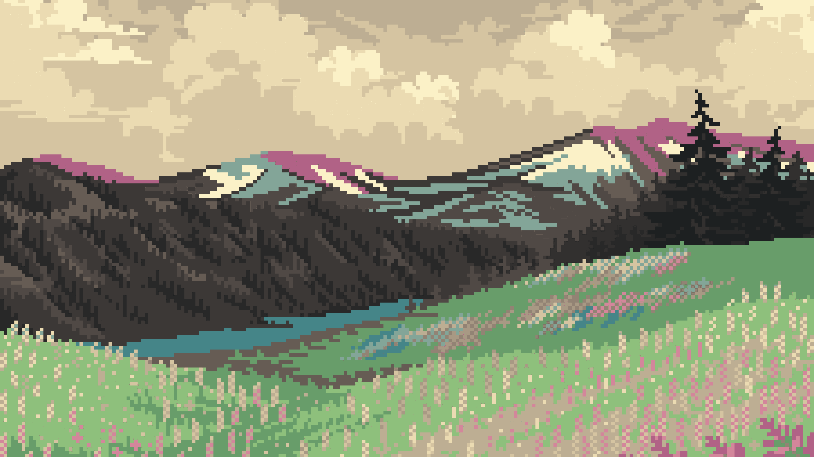

<!DOCTYPE html>
<html lang="english">
</html>
<link rel="stylesheet" href="main.css"/>
<head>
    <title>SimpleAesthetic</title>
</head>
<body>
    <header>
        <div class="header-content">
            <h1>SimpleAesthetic</h1>
        </div>
        <div id="right">
            <a href="index.html">Create</a>
            <a href="login.html">Login</a>
        </div>
    </header>
    <div>
        <h3>
            **Here will be all of the palettes from other users, or a selection of them if there are many. This will use a WebSocket 
            to dynamically load the content as the user scrolls. The data will be stored in the database.**
        </h3>
        <h3>Example palette:</h3>
        
        <div style="display: inline-block;">
            <div style="display: block; height: 50px; width: 4em; border: 1px solid rgb(170, 170, 170); background-color: rgb(251, 241, 199);"></div>
            <div style="display: block; height: 50px; width: 4em; border: 1px solid rgb(170, 170, 170); background-color: rgb(239, 219, 178);"></div>
            <div style="display: block; height: 50px; width: 4em; border: 1px solid rgb(170, 170, 170); background-color: rgb(177, 98, 134);"></div>
            <div style="display: block; height: 50px; width: 4em; border: 1px solid rgb(170, 170, 170); background-color: rgb(131, 165, 152);"></div>
            <div style="display: block; height: 50px; width: 4em; border: 1px solid rgb(170, 170, 170); background-color: rgb(104, 157, 106);"></div>
            <div style="display: block; height: 50px; width: 4em; border: 1px solid rgb(170, 170, 170); background-color: rgb(69, 133, 136);"></div>
            <div style="display: block; height: 50px; width: 4em; border: 1px solid rgb(170, 170, 170); background-color: rgb(80, 73, 69);"></div>
            <div style="display: block; height: 50px; width: 4em; border: 1px solid rgb(170, 170, 170); background-color: rgb(40, 40, 40);"></div>
        </div>
        <span>**Note: palette will be the 8 most prominent colors in the photo. Image and palette height will vary with image size/aspect ratio**</span>
</body>
<footer>
    <span>made by Carson Call | </span>
    <a href="https://github.com/carsoncall/SimpleAesthetic">GitHub Repo</a>
  </footer>